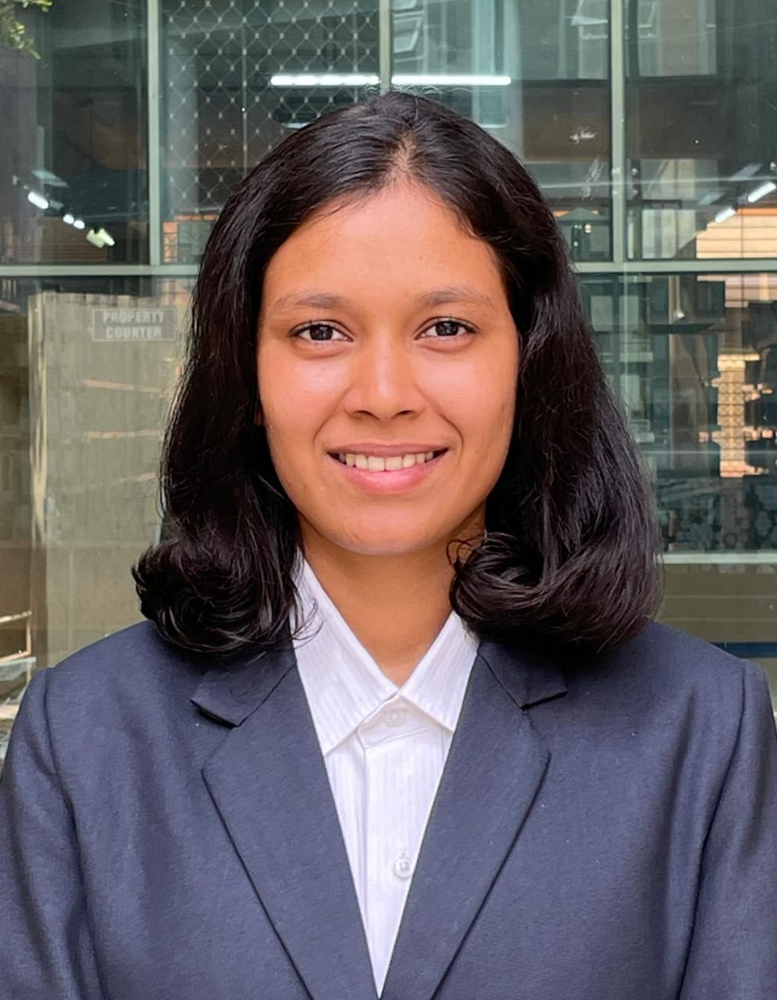

SANIKA GURAV

Summary
A motivated and dedicated software engineer passionate about learning new technologies and contributing to innovative solutions. Looking for opportunities to work in a collaborative environment where I can grow and apply my skills to solve technical challenges.
Education
- Gogte Institute Of Technology | Bachelor of Computer Science Enginering 2026-Present (CGPA: 9.1)
- GSS Science PU College Belgaum, Karnataka | 2021-2022 (Percentage: 91%)
- Divine Providence Convent High School Belgaum, Karnataka | 2010-2020 (Percentage: 96%)
Work Experience
- IIT DELHI | Graphics And Vision Summer School Delhi,India | 2024
- Developed and automated image processing pipelines using PyTorch, including custom datasets,
image collage creation, and prediction-based image segregation.
-
Improved the accuracy of the existing model
Skills
- Languages: Java, C, HTML, CSS
- Communication: Written And Oral Communication: English, Hindi, Marathi
- Principles: Attention to detail, analytical and problem solving